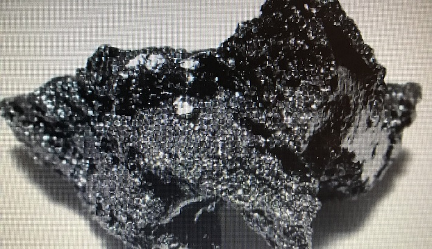
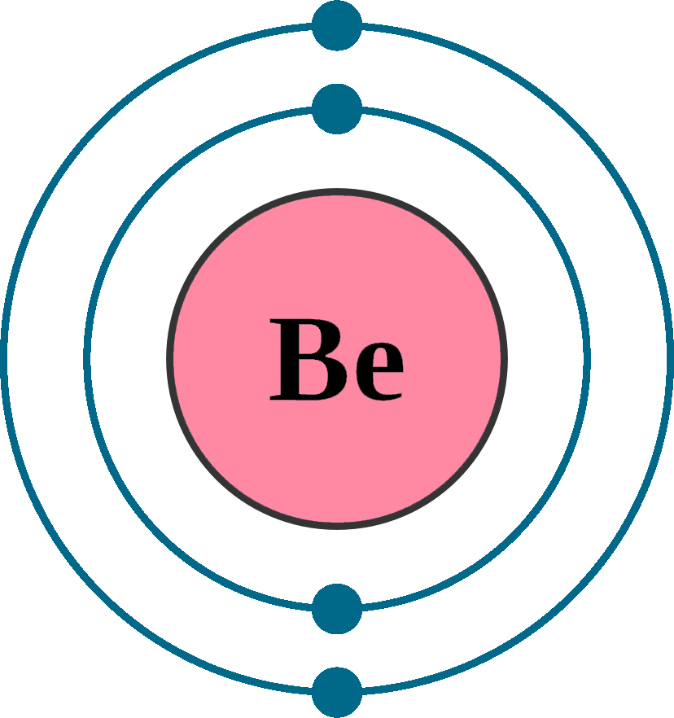
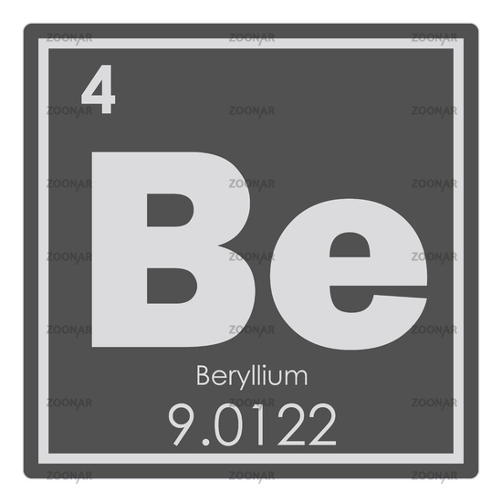

Бериллий
Бери́ллий (химический символ — Be, от лат. Beryllium) — химический элемент 2-й группы (по устаревшей классификации — главной подгруппы второй группы, IIA) второго периода периодической системы химических элементов Д. И. Менделеева с атомным номером 4.Как простое вещество бериллий — это хрупкий относительно твёрдый металл светло-серого цвета с характерным металлическим блеском. Чрезвычайно токсичен. Бериллий и его соединения являются канцерогенами, группа 1 по классификации МАИР.

Минералы бериллия – аквамаpин, изумруд, александрит и дpугие – использовались в ювелирном деле ещё до н. э.; название «берилл» встречается в греческих и латинских античных произведениях. В 1798 г. французский химик Л.-Н. Воклен описал извлечённую им из минерала берилла неизвестную ранее «землю» – оксид бериллия. Металлический бериллий получен в 1828 г. Ф. Вёлеpом в Геpмании и А. Бюсси во Фpанции восстановлением хлорида бериллия калием.

Бериллий находится в коре Земли в количестве 3,8 г/т, которое достигает своего максимума в щелочных породах. В морской воде элемент содержится в ничтожно малом количестве. Установлено около 30 минералов, содержащих бериллий, но лишь 6 получили известность. Применение в промышленности получил берилл. Известны виды берилла, которые относят к драгоценным: аквамарин, изумруд, гелиодор. Цвет самого минерала обуславливается наличием других элементов.Залежи бериллия имеются в России (Республика Бурятия, Свердловская и Мурманская области), Аргентине, Индии, Африке и Казахстане.

Бериллий по твердости превосходит такие металлы, как алюминий и магний. Хрупок, имеет серебристо-белый цвет. Модуль упругости бериллия выше, чем у стали, и составляет 300 ГПа. На воздухе на поверхности металла образуется устойчивая пленка оксида. Скорость звука в бериллии выше, чем в других металлах. Ее значение — 12600 м/с.Бериллий имеет 2 степени окисления; +1 и +2. Гидроокись бериллия (II) проявляет амфотерные свойства, выступая, либо, как слабое основание, либо, как слабая кислота. По химическим свойствам схож с алюминием